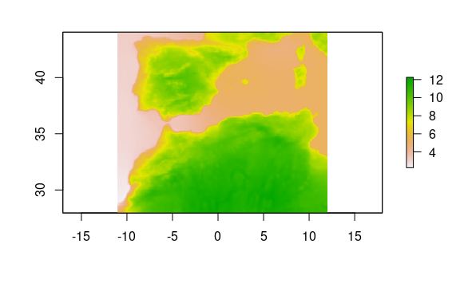
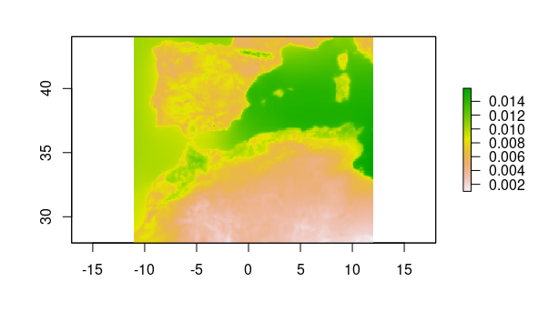
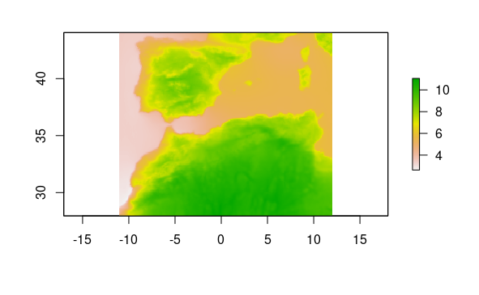
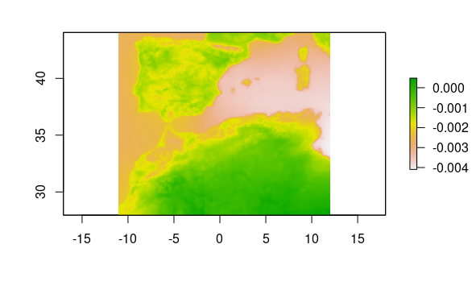
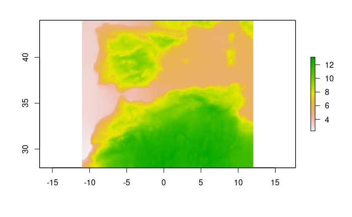
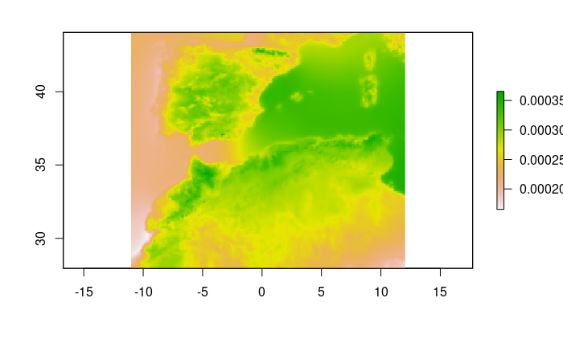

Periods selection and parameters calculation.
Here we select the concrete periods in which we are interested in, we charge our data for these periods and we calculate two parameters for them, the Median Absolute Deviation and the slope. We also save the results (we make the computational work by 50x50 pixels) and plot them.
-14650, -14400 period, Median Absolute Deviation
tas_ds <- read_dsclim(folder, var, -14650, -14400, proxy = TRUE)
t <- st_get_dimension_values(tas_ds, "time") %>% as.numeric(.)/(365*24*60*60)
# reduce_data(-14650, -14400, folder=folder, var=var, FUN="mad", size=50)
out_mad <- stars::st_apply(tas_ds, MARGIN = c(1, 2), FUN=mad)
write_stars(out_mad, "mad_-14650_-14400.tif", chunk_size = c(50, 50))
plot(raster::raster("mad_-14650_-14400.tif"))

Figure 1.
-14650, -14400 period, Slope
out_slope <- stars::st_apply(tas_ds, MARGIN = c(1, 2), FUN = slope, t = t)
write_stars(out_slope, "slope_-14650_-14400.tif", chunk_size = c(50, 50))
plot(raster::raster("slope_-14650_-14400.tif"))

Figure 2.
-18149, -17150 period, Median Absolute Deviation
tas_ds <- read_dsclim(folder, var, -18149, -17150, proxy = TRUE)
t <- st_get_dimension_values(tas_ds, "time") %>% as.numeric(.)/(365*24*60*60)
# reduce_data(-18150, -17150, folder=folder, var=var, FUN="mad", size=50)
out_mad <- stars::st_apply(tas_ds, MARGIN = c(1, 2), FUN = mad)
write_stars(out_mad, "mad_-18149_-17150.tif", chunk_size = c(50, 50))
plot(raster::raster("mad_-18149_-17150.tif"))

Figure 3.
-18149, -17150 period, Slope
out_slope <- stars::st_apply(tas_ds, MARGIN = c(1, 2), FUN = slope, t = t)
write_stars(out_slope, "slope_-18149_-17150.tif", chunk_size = c(50, 50))
plot(raster::raster("slope_-18149_-17150.tif"))

Figure 4.
-22000, 40 period, Median Absolute Deviation
tas_ds <- read_dsclim(folder, var, -22000, 40, proxy = TRUE)
t <- st_get_dimension_values(tas_ds, "time") %>% as.numeric(.)/(365*24*60*60)
out_mad <- stars::st_apply(tas_ds, MARGIN = c(1, 2), FUN = mad)
write_stars(out_mad, "mad_-22000_40.tif", chunk_size = c(50, 50))
plot(raster::raster("mad_-22000_40.tif"))

Figure 5.
-22000, 40 period, Slope
out_slope <- stars::st_apply(tas_ds, MARGIN = c(1, 2), FUN = slope, t = t, PROGRESS = TRUE)
write_stars(out_slope, "slope_-22000_40.tif", chunk_size = c(50, 50))
plot(raster::raster("slope_-22000_40.tif"))

Figure 6.